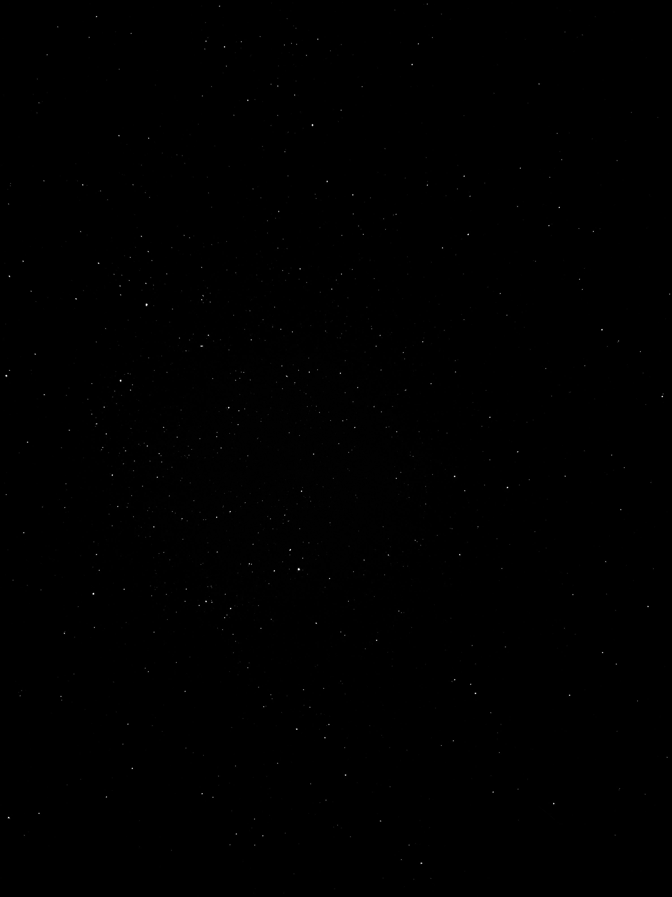
Thomas Ma
Artificial Intelligence Researcher & Future Medical Student
I work on
Emory University School of Medicine
Department of Pathology and Laboratory Medicine
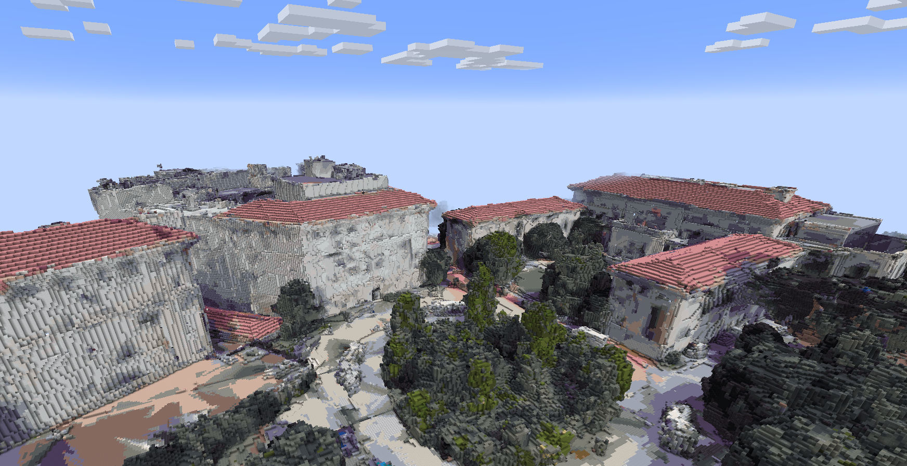
About Me
I graduated highest honors from Emory University with a Bachelor of Science in Computer Science, and I am now preparing for a career in medicine with a special interest in pathology. I’m passionate about applying computational models to improve diagnostics, treatment decisions, and patient outcomes from both the lab and the clinic.
My research focuses on artificial intelligence in healthcare. I’m currently working at the O'Doherty Lab in the Department of Pathology and Laboratory Medicine at Emory University. In the past, I received highest honors for my thesis on using deep learning to automate flow cytometry interpretation for multiple myeloma detection. I have also developed a framework that leverages graph neural networks and attention-based mechanisms to predict breast cancer recurrence from histologic whole-slide images.
I’m excited by the intersection of computer science and medicine and aim to contribute to a future where machine learning helps patients, families, and medical staff to make more informed decisions.
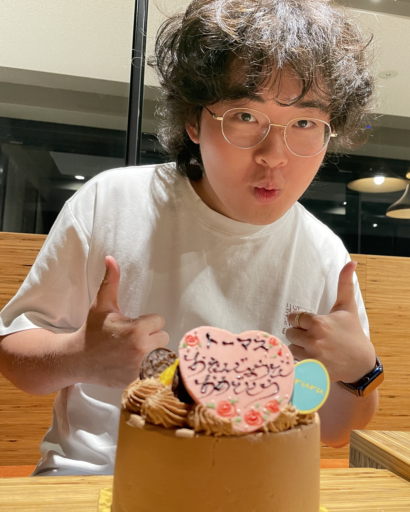
Research
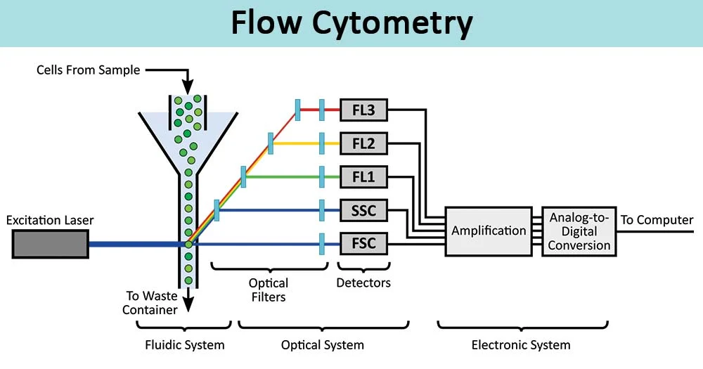
AI Automation of Flow Cytometry to Identify Myeloma
Developed a novel Branched Attention for Monoclonal Sensitivity (BAMS) model based on ABMIL for automated flow interpretations that outperformed classical ML, CNN, and ABMIL in AUROC and F1 in detecting abnormal cell populations, and introduced the novel application of deep learning models on flow data for myeloma detection.
View on ETD →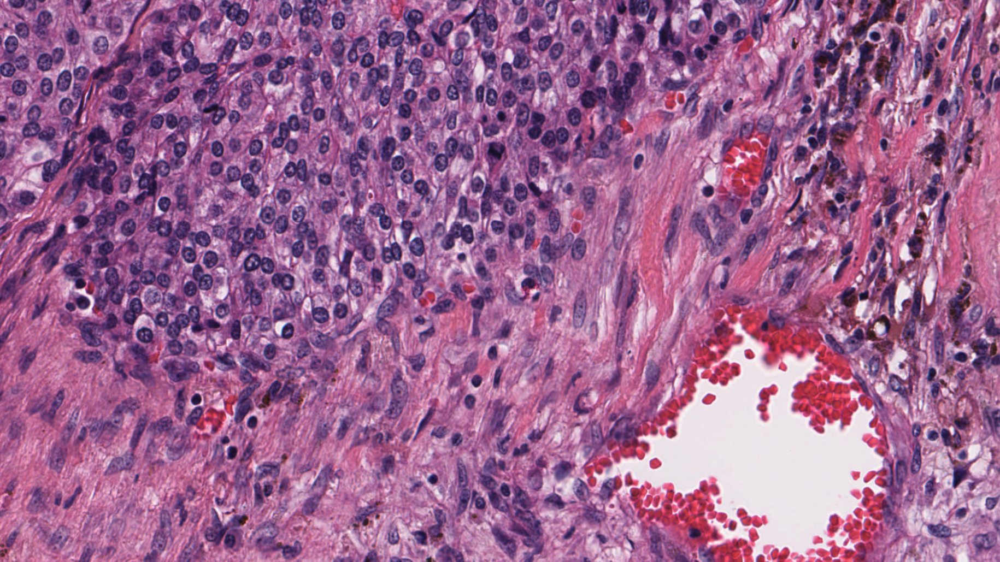
Graphs HELP Predict Cancer: Multimodal GNNs for Cancer Recurrence Risk
Created a novel Gated Fusion hybrid model (Graph Transformer + Hypergraph Neural Network classifier) and implemented whole-slide image data and clinicopathologic metadata compatibility to predict recurrence risk.
View PDF →Projects
AISHA: Artificial Intelligence-Simulated Human Avatar
Avatar from gaussian splatting with movement model for motion simulation, LLM for conversation, and VLM for visual-based response.
Horror Game

Emory2MC: 3D Mesh Reconstruction and Voxel Rendering of Emory University in Minecraft
Built pipeline for large-scale 3D reconstruction of environments from video, made 3D reconstructions compatible with voxel rendering for application to Minecraft game environment, and produced a complete reconstruction of Emory University Atlanta campus in Minecraft
Experience
Oct. 2025 - Current
Medical Scribe
Mosaic Health Center
Scribed for physicians using eClinicalWorks EHR including HPI, ROS, and treatment plans
June 2024
Engineering Intern
Chizu Electric Co., LTD.
Created 2D and 3D models using iCAD SX software for electrical manufacturing and evaluated real-world applications of company components in Tesla and Panasonic systems
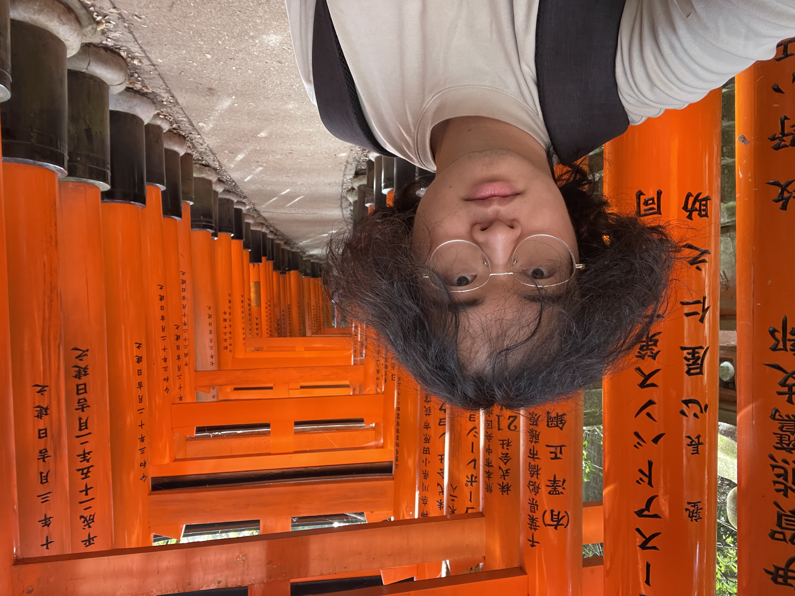
Jan. 2024 - June 2024
Study Abroad
Kansai Gaidai University
Immersed with Japanese society through language, art history, culture, and studio art
Conferences & Abstracts
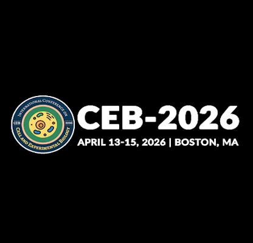
CEB
Boston, MA | April 13-15, 2026
Bradykinin-Induced Pulmonary Angioedema: A Curable Form of ARDS in COVID-19 Patients?
View PDF →
AIMed25
San Diego | Nov. 9-12, 2025
VignetteGen: Leveraging Large Language Models and Generative Adversarial Networks for Holistic Synthetic Medical Scenarios with Imaging
View PDF →Hobbies

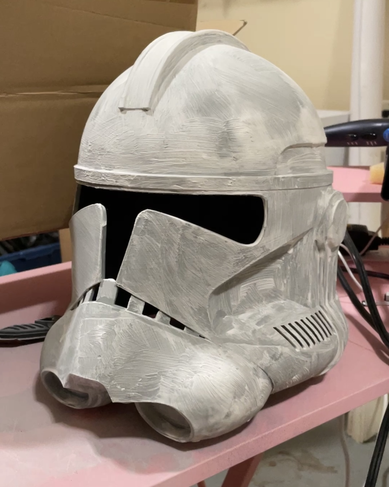

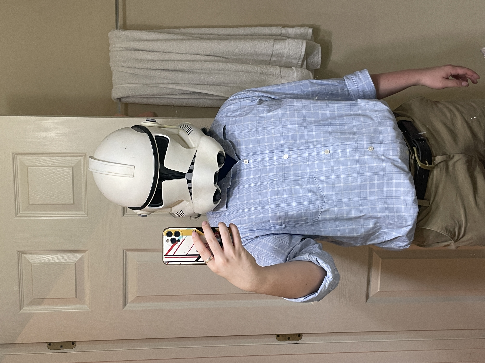
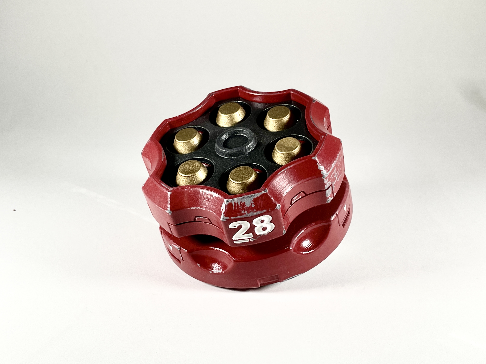
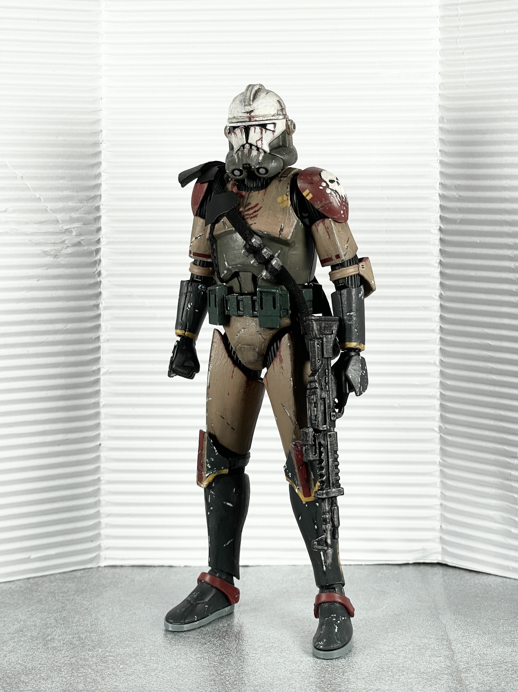
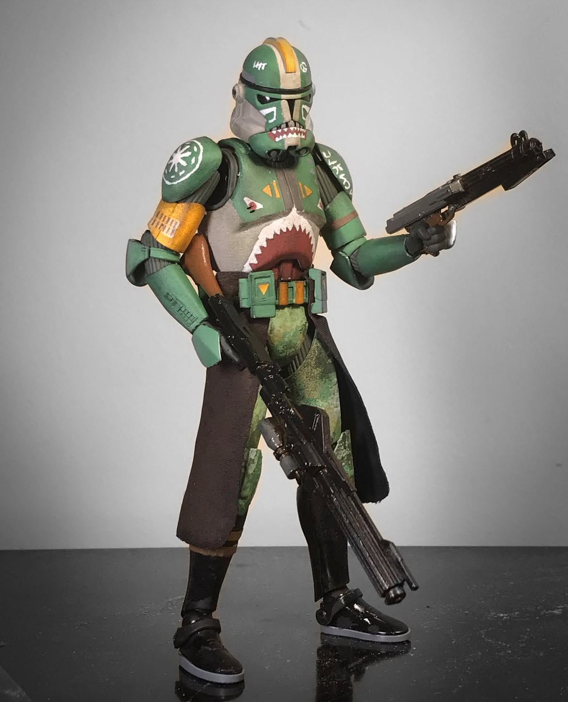